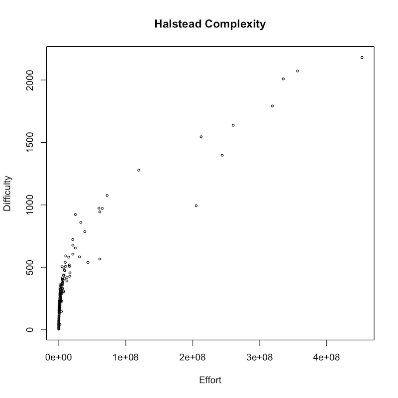
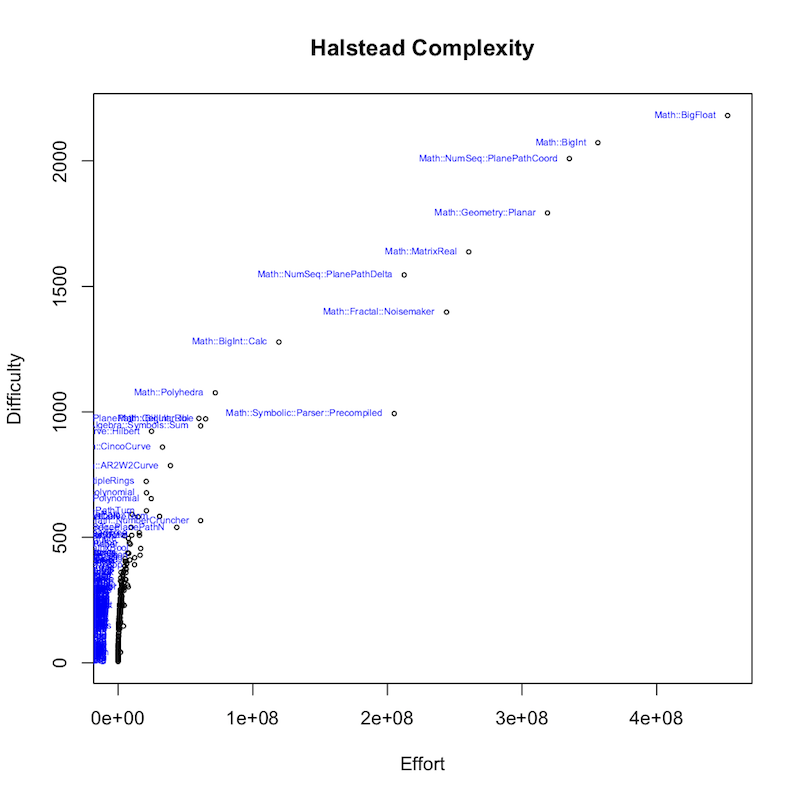
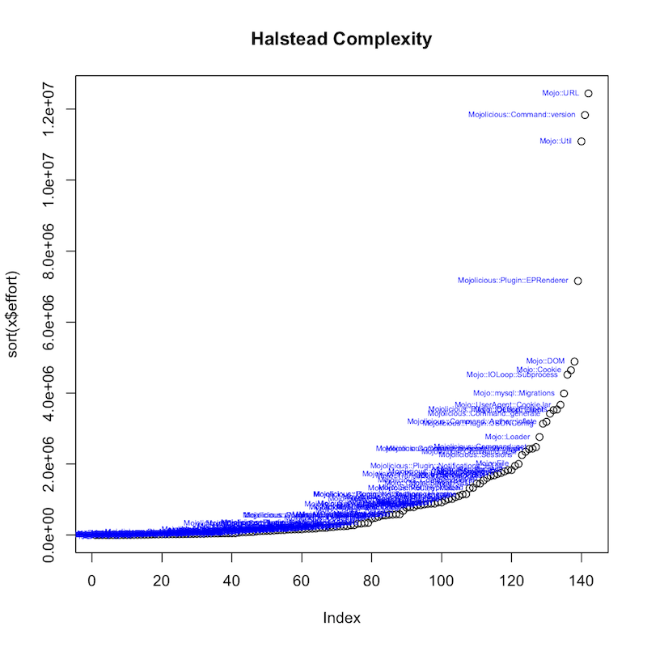

Halstead Software Complexity of Perl Code
The other day I stumbled across the Wikipedia entry for Halstead software complexity and became curious about how the language Perl would measure up.
Now I knew the adage that "only perl can parse perl", but I also knew about the PPI set of modules on the CPAN. So I got to reading/experimenting...
After a bit of trial and error, I found that I could dump out the statements in a PPI document (i.e. a random blob of perl code) as a list of PPI::Tokens - basically "types" of the parts of the statements. Then either skip them (like comments and POD) or identify the parts as either operators or operands.
These identified operators and operands are the basis for Halstead's metrics. As a simple example, the equation "1 + 2 = 3" has 2 operators (+ and =) and 3 operands (1, 2 and 3). In real world perl programs there are a large number of each!
The result of this PPI parsing turned into the module: Perl::Metrics::Halstead which, besides parsing, just "does the math."
Now measuring a program in isolation can't really tell you anything. The only metric with a dimension is the "Time required to program", which is given in seconds. And even this number should be taken with a big grain of salt! All the other computed metrics (which can be read about in the Wikipedia article linked above) are dimensionless and thus "relative." That is, you can only judge a given number based on its relative distance from another number of the same metric.
Also, I read about how the effort measure is the only meaningful stat of the lot. But difficulty is a compelling word... The two are directly related, but I chose those to plot. So this can be thought of as a "ruler" measuring relative distances.
So how does perl measure up? To see, I used the Halstead module to analyze sets of packages from CPAN. The result of my efforts is this program: halstead-metrics included with the CPAN distribution. Basically, it first collects the locally installed modules, including and excluding if requested. It then gathers all the important PPI::Tokens (as either operators or operands) for each module, figures out the distinct ones and counts them for Halstead's equations into N1, N2, n1 and n2 (as described in the Wikipedia link above). The metrics are computed for each module and put into a CSV file that is then fed to the program R for its visualization power and simplicity. (The R commands to execute are listed under __END__ at the bottom of the program.)
On my system, I have 230 perl CPAN packages with the word "Math" in the name. This is certainly not all there is on CPAN, but a fair accounting for my purposes. When I run halstead-metrics over them, I get a CSV file that is rendered into this scatter-plot:

The next image shows the module names (visible for the higher valued data points):

Again, plot this is only to illustrate the relative effort/difficulty of code. So who is the winner? Math::BigFloat!
Here is the sorted plot of effort over 142 installed packages with "Mojo" in the name:
